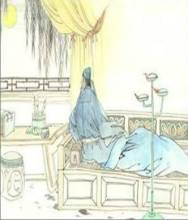

李白（701～762），字太白，号青莲居士。李白（701～762），字太白，号青莲居士。李白（701～762），字太白，号青莲居士。李白（701～762），字太白，号青莲居士。李白（701～762），字太白，号青莲居士。李白（701～762），字太白，号青莲居士。李白（701～762），字太白，号青莲居士。李白（701～762），字太白，号青莲居士。李白（701～762），字太白，号青莲居士。李白（701～762），字太白，号青莲居士。李白（701～762），字太白，号青莲居士。是屈原之后最具个性特色、最伟大的浪漫主义诗人。有“诗仙”之美誉，与杜甫并称“李杜”。其诗以抒情为主，表现出蔑视权贵的傲岸精神，对人民疾苦表示同情，又善于描绘自然景色，表达对祖国山河的热爱。诗风雄奇豪放，想像丰富，语言流转自然，音律和谐多变，善于从民间文艺和神话传说中吸取营养和素材，构成其特有的瑰玮绚烂的色彩，达到盛唐诗歌艺术的巅峰。存世诗文千余篇，有《李太白集》30卷李白（701～762），字太白，号青莲居士。李白（701～762），字太白，号青莲居士。李白（701～762），字太白，号青莲居士。李白（701～762），字太白，号青莲居士。李白（701～762），字太白，号青莲居士。李白（701～762），字太白，号青莲居士。李白（701～762），字太白，号青莲居士。李白（701～762），字太白，号青莲居士。李白（701～762），字太白，号青莲居士。李白（701～762），字太白，号青莲居士。李白（701～762），字太白，号青莲居士。李白（701～762），字太白，号青莲居士。李白（701～762），字太白，号青莲居士。李白（701～762），字太白，号青莲居士。李白（701～762），字太白，号青莲居士。李白（701～762），字太白，号青莲居士。李白（701～762），字太白，号青莲居士。李白（701～762），字太白，号青莲居士。李白（701～762），字太白，号青莲居士。李白（701～762），字太白，号青莲居士。李白（701～762），字太白，号青莲居士。李白（701～762），字太白，号青莲居士。李白（701～762），字太白，号青莲居士。李白（701～762），字太白，号青莲居士。李白（701～762），字太白，号青莲居士。李白（701～762），字太白，号青莲居士。李白（701～762），字太白，号青莲居士。李白（701～762），字太白，号青莲居士。。